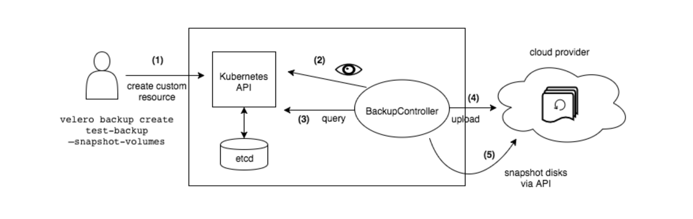

集群灾份工具 Velero

Install Cli
Donwload Cli velero是通过k8s config进行认证的，需要放到k8s master节点，或者本地有k8s config。更深度的了解Velero
configurtion ak
1
2
3
4
|
cat >credentials-velero <<EOF
ALIBABA_CLOUD_ACCESS_KEY_ID=
ALIBABA_CLOUD_ACCESS_KEY_SECRET=
EOF
|
- –prefix=xxxx & bucket的路径
- –backup-location-config region=$REGION,network=internal #开启内网传输
Install velero
1
2
3
4
5
6
7
8
9
10
11
12
13
14
15
16
17
18
19
20
|
velero install \
--provider alibabacloud \
--image registry.cn-hangzhou.aliyuncs.com/acs/velero:1.4.2-2b9dce65-aliyun \
--bucket k8s-cluster-backup \
--secret-file ./credentials-velero \
--use-volume-snapshots=false \
--backup-location-config region=cn-hangzhou,network=internal \
--use-restic \
--prefix=/local-test/ \
--restic-pod-cpu-request=100m \
--restic-pod-mem-request=100Mi \
--restic-pod-cpu-limit=200m \
--restic-pod-mem-limit=200Mi \
--velero-pod-cpu-limit=200m \
--velero-pod-cpu-request=100m \
--velero-pod-mem-limit=400Mi \
--velero-pod-mem-request=200Mi \
--plugins registry.cn-hangzhou.aliyuncs.com/acs/velero-plugin-alibabacloud:v1.0.0-2d33b89 \
--wait \
--dry-run -o yaml
|
backup
1
2
|
#备份所有资源
velero backup create NAME --wait --ttl=10h (ttl default 720h,默认在oss存储1个月)
|
1
2
|
# 备份多个namespace用,隔离 server,ali-sml,local-test
velero backup create NAME --include-namespaces server --wait
|
restore
1
|
velero restore create --from-backup BACKUP_NAME --wait
|
auto backup
1
2
3
4
5
6
7
8
9
10
11
12
13
14
|
| Character Position | Character Period | Acceptable Values |
| -------------------|:----------------:| -----------------:|
| 1 | Minute | 0-59,* |
| 2 | Hour | 0-23,* |
| 3 | Day of Month | 1-31,* |
| 4 | Month | 1-12,* |
| 5 | Day of Week | 0-6,* |
# 每小时自动备份所有资源
velero create schedule NAME --schedule="0 */1 * * *"
# 每小时自动备份某个命名空间的资源
velero create schedule NAME --schedule="@every 1h" --include-namespaces ali-sml
|